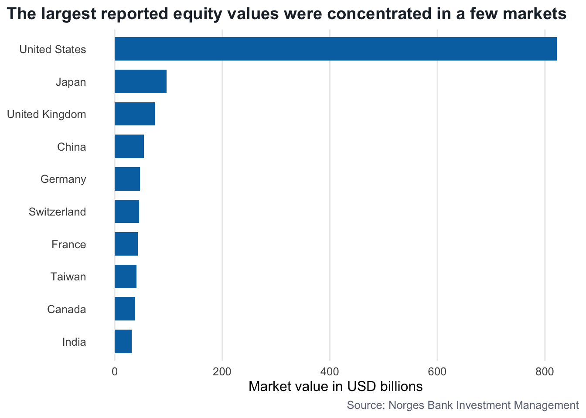
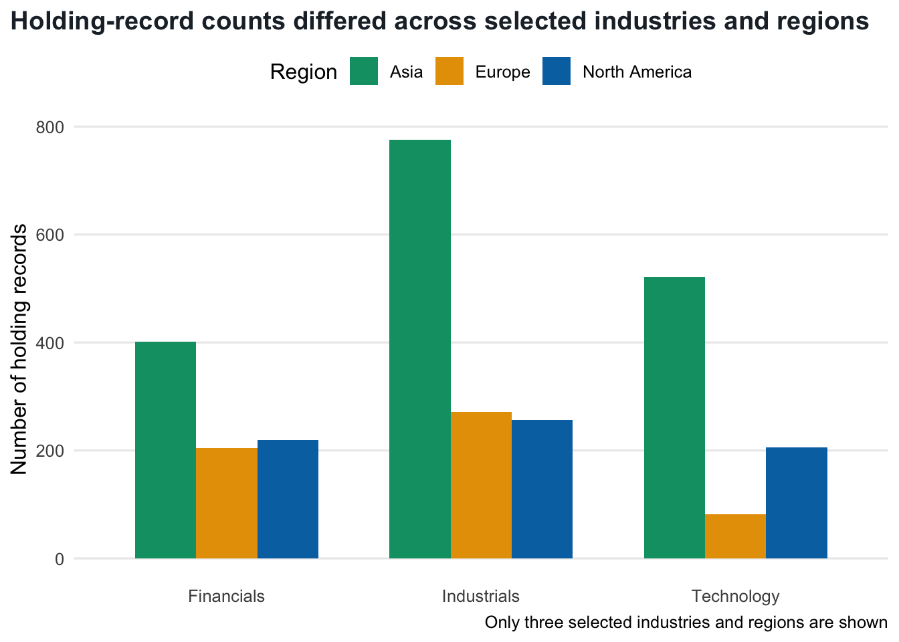
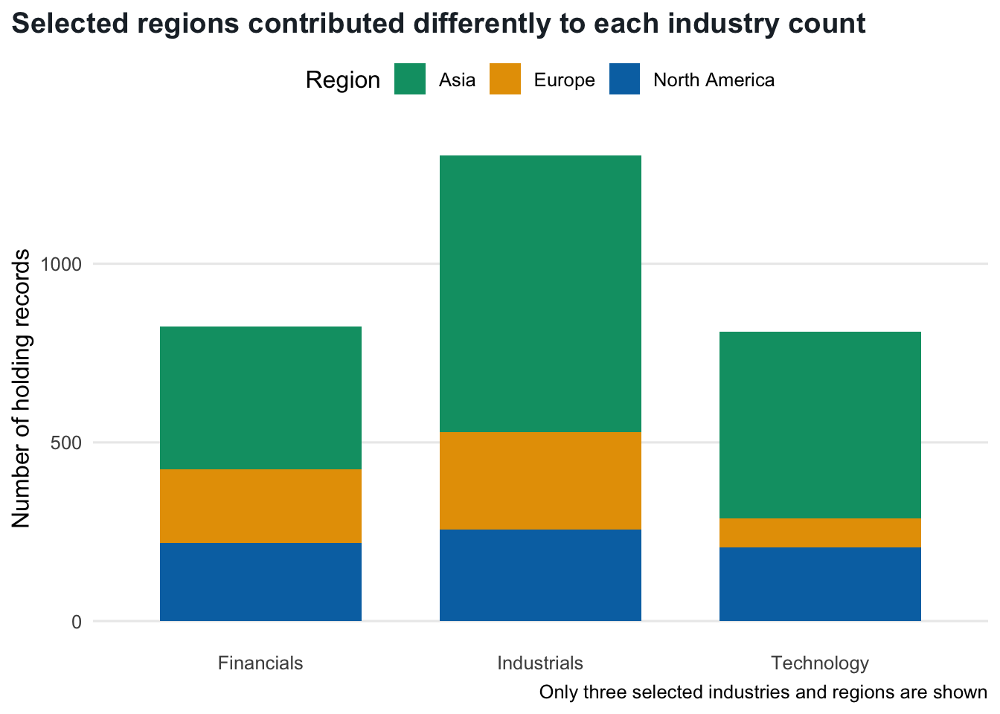
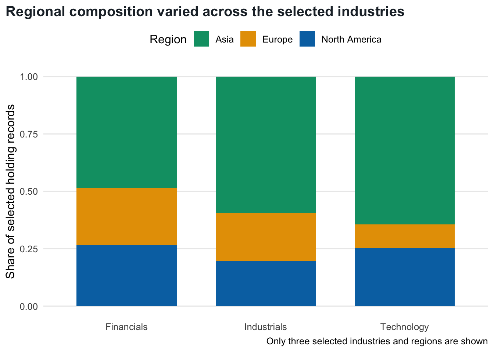
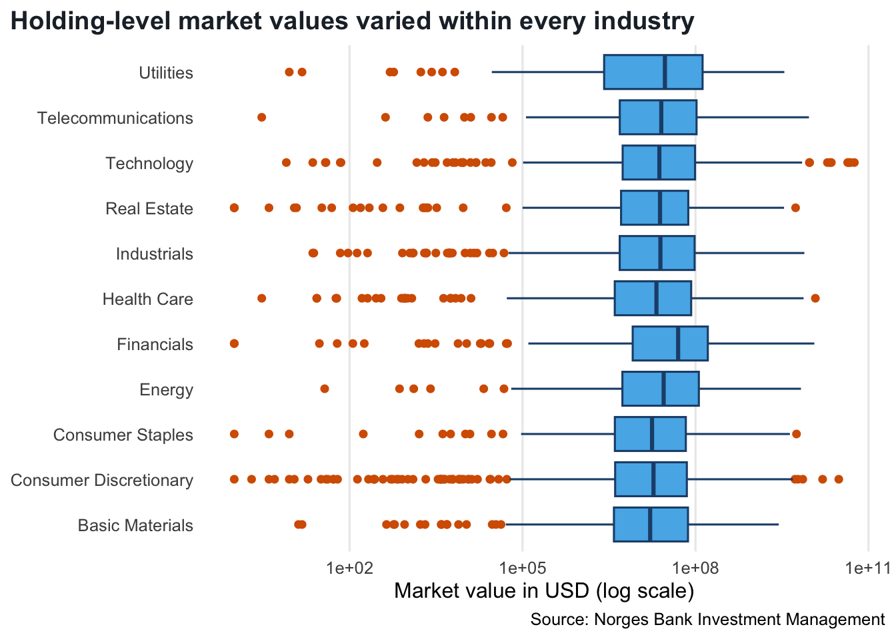
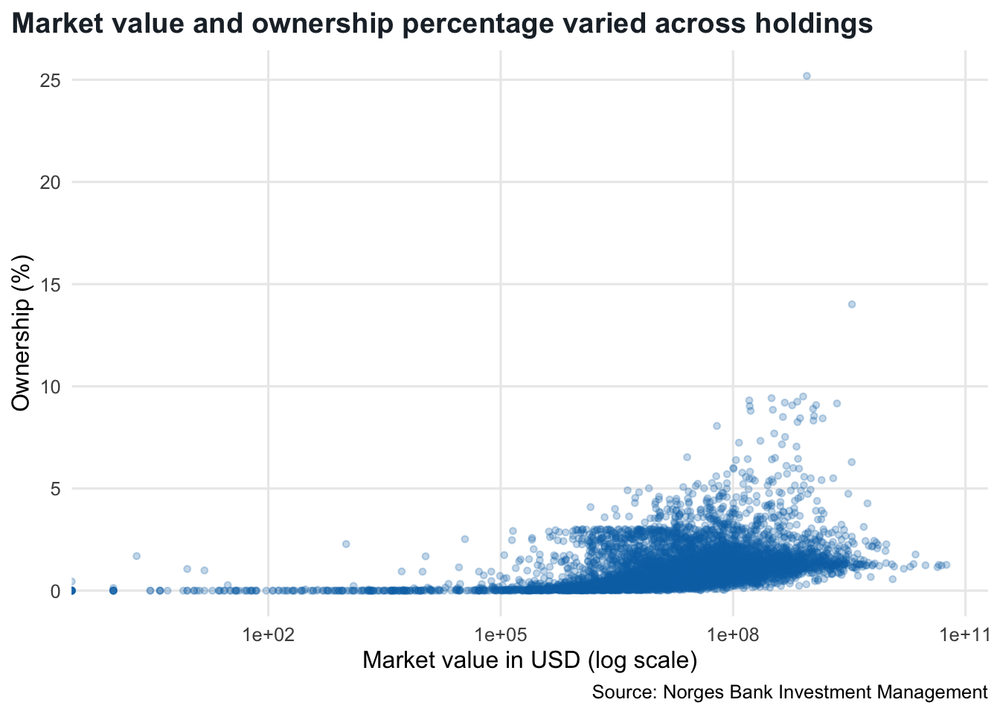
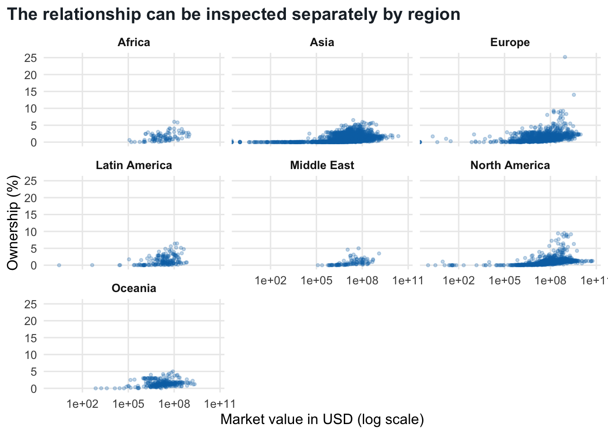
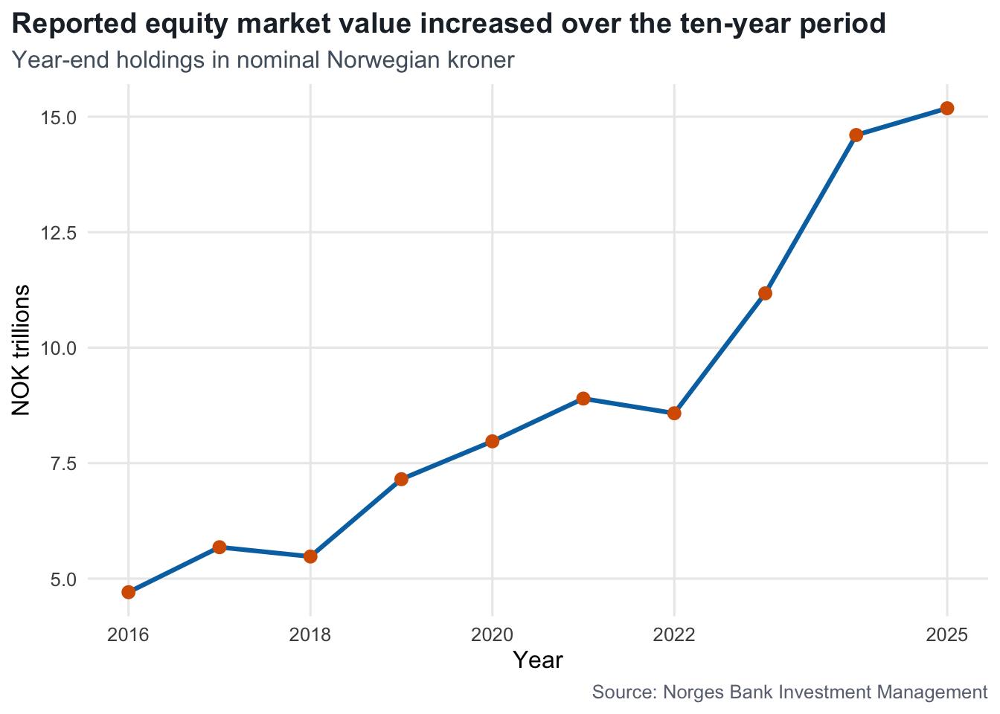

library(tidyverse)
gpfg <- read_csv("data/gpfg.csv")
gpfg_panel <- read_csv("data/gpfg_equities_last_10_years.csv")9 Visualize Multiple Variables
9.1 Learning objectives
By the end of this chapter, you should be able to:
- choose a chart that matches a comparison, relationship, or change question;
- make ordered, grouped, stacked, and percentage-stacked bar charts;
- use a dot plot as an alternative to bars;
- compare distributions with box plots;
- examine relationships with scatterplots;
- show change over time with line charts; and
- save a finished chart with
ggsave().
9.2 Move beyond description
The previous chapter described one column. Questions involving two or more columns allow us to compare categories, examine relationships, and follow change over time:
| Question | Useful starting chart |
|---|---|
| Which categories have the largest values? | Ordered bar chart or dot plot |
| How do categories compare across a few groups? | Grouped bar chart |
| How is a total divided into parts? | Stacked bar chart |
| How do proportions differ? | Percentage-stacked bar chart |
| How do numeric distributions differ across groups? | Box plot |
| Are two numeric variables related? | Scatterplot |
| How does a measure change over time? | Line chart |
Continue in the same project
Open djr.Rproj and create 07-multiple-variable-visualization.Rmd. Reuse the latest-year and multi-year GPFG files in data/. Save finished charts in outputs/.
9.3 Compare categories with an ordered bar chart
Ask:
Which investment markets had the largest total reported market values at the end of 2025?
First prepare the table the chart will display:
top_countries <- gpfg |>
group_by(country) |>
summarise(market_value_usd = sum(market_value_usd)) |>
arrange(desc(market_value_usd)) |>
slice_head(n = 10) |>
mutate(market_value_usd_billions = market_value_usd / 1000000000)
top_countriesgeom_col() draws bars from values that have already been calculated:
country_bar <- top_countries |>
ggplot(
aes(
x = market_value_usd_billions,
y = fct_reorder(country, market_value_usd_billions)
)
) +
geom_col(fill = "#0072B2", width = 0.72) +
labs(
title = "The largest reported equity values were concentrated in a few markets",
x = "Market value in USD billions",
y = NULL,
caption = "Source: Norges Bank Investment Management"
) +
theme_minimal(base_size = 12) +
theme(
panel.grid.major.y = element_blank(),
panel.grid.minor = element_blank(),
plot.title = element_text(face = "bold", color = "#1F2933"),
plot.caption = element_text(color = "#6B7280"),
plot.title.position = "plot",
plot.caption.position = "plot"
)
country_bar
The deep blue gives the book a consistent primary data color. The minimal theme keeps the numeric grid lines needed for comparison while removing unnecessary lines behind the country labels. Bold title text creates a clear reading order.
geom_bar() or geom_col()?
geom_bar() counts rows from one categorical column. geom_col() uses a numeric value that has already been calculated. Use the function that matches the question and the table supplied to ggplot().
9.4 Use a dot plot for the same comparison
A dot plot can show the same ranking with less visual weight:
top_countries |>
ggplot(
aes(
x = market_value_usd_billions,
y = fct_reorder(country, market_value_usd_billions)
)
) +
geom_point(color = "#0072B2", size = 3) +
labs(
title = "Ten investment markets with the largest reported equity values",
x = "Market value in USD billions",
y = NULL,
caption = "Source: Norges Bank Investment Management"
) +
theme_minimal(base_size = 12) +
theme(
panel.grid.major.y = element_blank(),
panel.grid.minor = element_blank(),
plot.title = element_text(face = "bold", color = "#1F2933"),
plot.caption = element_text(color = "#6B7280"),
plot.title.position = "plot",
plot.caption.position = "plot"
)
Bars emphasize magnitude from a zero baseline. Dots are compact and make the positions easy to compare, especially when many category labels are present.
9.5 Compare categories across groups
To demonstrate grouped and stacked bars without overcrowding the chart, select three regions and three industries:
region_industry_counts <- gpfg |>
filter(
region %in% c("Asia", "Europe", "North America"),
industry %in% c("Technology", "Financials", "Industrials")
) |>
count(industry, region)
region_industry_countsGrouped bars
Grouped bars place the regions beside one another within each industry. They are useful for direct comparisons across a small number of groups:
ggplot(
region_industry_counts,
aes(x = industry, y = n, fill = region)
) +
geom_col(position = "dodge", width = 0.72) +
scale_fill_manual(
values = c(
"Asia" = "#009E73",
"Europe" = "#E69F00",
"North America" = "#0072B2"
)
) +
labs(
title = "Holding-record counts differed across selected industries and regions",
x = NULL,
y = "Number of holding records",
fill = "Region",
caption = "Only three selected industries and regions are shown"
) +
theme_minimal(base_size = 12) +
theme(
panel.grid.major.x = element_blank(),
panel.grid.minor = element_blank(),
legend.position = "top",
plot.title = element_text(face = "bold", color = "#1F2933"),
plot.title.position = "plot"
)
scale_fill_manual() assigns the same color to each region in every grouped and stacked example. Blue, orange, and green remain distinguishable for many readers with common forms of color-vision deficiency. Color identifies groups; it is not added merely as decoration.
Stacked bars
Stacked bars emphasize the combined total and how each region contributes to it:
ggplot(
region_industry_counts,
aes(x = industry, y = n, fill = region)
) +
geom_col(width = 0.72) +
scale_fill_manual(
values = c(
"Asia" = "#009E73",
"Europe" = "#E69F00",
"North America" = "#0072B2"
)
) +
labs(
title = "Selected regions contributed differently to each industry count",
x = NULL,
y = "Number of holding records",
fill = "Region",
caption = "Only three selected industries and regions are shown"
) +
theme_minimal(base_size = 12) +
theme(
panel.grid.major.x = element_blank(),
panel.grid.minor = element_blank(),
legend.position = "top",
plot.title = element_text(face = "bold", color = "#1F2933"),
plot.title.position = "plot"
)
Only the bottom segment shares a common baseline, so exact comparisons among the other segments can be difficult. Use grouped bars when direct comparison is more important than the combined total.
Percentage-stacked bars
position = "fill" makes every bar the same height and displays composition:
ggplot(
region_industry_counts,
aes(x = industry, y = n, fill = region)
) +
geom_col(position = "fill", width = 0.72) +
scale_fill_manual(
values = c(
"Asia" = "#009E73",
"Europe" = "#E69F00",
"North America" = "#0072B2"
)
) +
labs(
title = "Regional composition varied across the selected industries",
x = NULL,
y = "Share of selected holding records",
fill = "Region",
caption = "Only three selected industries and regions are shown"
) +
theme_minimal(base_size = 12) +
theme(
panel.grid.major.x = element_blank(),
panel.grid.minor = element_blank(),
legend.position = "top",
plot.title = element_text(face = "bold", color = "#1F2933"),
plot.title.position = "plot"
)
This version makes proportions easier to compare but hides differences in the total number of records. Choose between totals and percentages according to the reporting question.
9.6 Compare numeric distributions across groups
Adding industry to the one-variable box plot allows us to compare holding- level distributions:
ggplot(
gpfg,
aes(x = market_value_usd, y = industry)
) +
geom_boxplot(
fill = "#56B4E9",
color = "#1F4E79",
outlier.color = "#D55E00"
) +
scale_x_log10() +
labs(
title = "Holding-level market values varied within every industry",
x = "Market value in USD (log scale)",
y = NULL,
caption = "Source: Norges Bank Investment Management"
) +
theme_minimal(base_size = 12) +
theme(
panel.grid.major.y = element_blank(),
panel.grid.minor = element_blank(),
plot.title = element_text(face = "bold", color = "#1F2933"),
plot.title.position = "plot"
)
This chart compares individual holding distributions. It does not compare the total market value of the industries.
9.7 Examine a relationship with a scatterplot
Use a scatterplot when both variables are numeric:
ggplot(
gpfg,
aes(x = market_value_usd, y = ownership_pct)
) +
geom_point(color = "#0072B2", alpha = 0.25, size = 1.2) +
scale_x_log10() +
labs(
title = "Market value and ownership percentage varied across holdings",
x = "Market value in USD (log scale)",
y = "Ownership (%)",
caption = "Source: Norges Bank Investment Management"
) +
theme_minimal(base_size = 12) +
theme(
panel.grid.minor = element_blank(),
plot.title = element_text(face = "bold", color = "#1F2933"),
plot.title.position = "plot"
)
Each point represents one holding. Look for direction, clusters, and unusual observations. alpha = 0.25 makes each point partly transparent, so dense overlapping areas become visible instead of turning into one solid block. A visible relationship does not show that one variable caused the other.
9.8 Add a third variable with small multiples
facet_wrap() repeats the scatterplot for each region:
ggplot(
gpfg,
aes(x = market_value_usd, y = ownership_pct)
) +
geom_point(color = "#0072B2", alpha = 0.25, size = 0.9) +
scale_x_log10() +
facet_wrap(~ region) +
labs(
title = "The relationship can be inspected separately by region",
x = "Market value in USD (log scale)",
y = "Ownership (%)"
) +
theme_minimal(base_size = 12) +
theme(
panel.grid.minor = element_blank(),
strip.text = element_text(face = "bold"),
plot.title = element_text(face = "bold", color = "#1F2933"),
plot.title.position = "plot"
)
Because the panels use the same axes, their patterns can be compared. Faceting is often clearer than placing many categories in one plotting area.
9.9 Show change over time with a line chart
A line chart is suitable when the horizontal variable has a meaningful order, usually time. Prepare one value per year:
annual <- gpfg_panel |>
group_by(year) |>
summarise(market_value_nok = sum(market_value_nok)) |>
arrange(year) |>
mutate(market_value_nok_trillions = market_value_nok / 1000000000000)geom_line() connects the annual values, while geom_point() keeps the observed years visible:
annual |>
ggplot(aes(x = year, y = market_value_nok_trillions)) +
geom_line(color = "#0072B2", linewidth = 1.1) +
geom_point(color = "#D55E00", size = 2.6) +
scale_x_continuous(
breaks = c(2016, 2018, 2020, 2022, 2025)
) +
labs(
title = "Reported equity market value increased over the ten-year period",
subtitle = "Year-end holdings in nominal Norwegian kroner",
x = "Year",
y = "NOK trillions",
caption = "Source: Norges Bank Investment Management"
) +
theme_minimal(base_size = 12) +
theme(
panel.grid.minor = element_blank(),
plot.title = element_text(face = "bold", color = "#1F2933"),
plot.subtitle = element_text(color = "#52606D"),
plot.caption = element_text(color = "#6B7280"),
plot.title.position = "plot",
plot.caption.position = "plot"
)
The line shows change in nominal year-end value. It does not show investment returns or how much the fund purchased each year. Do not connect categories with a line when they have no meaningful order.
9.10 Finish and save a chart
Before publication, check:
- Does the chart answer one clear question?
- Does the title match the calculation?
- Are the population, period, measure, and unit clear?
- Are categories ordered meaningfully?
- Is any transformation disclosed?
- Does color distinguish meaningful groups?
- Is the source named?
- Do the plotted values agree with the analysis table?
- Is an important limitation stated in the chart or story?
ggsave() saves a chart object to a file:
ggsave("outputs/country-holdings.png", country_bar)The filename and chart object are enough for this lesson. Width, height, and resolution are optional controls for later publication requirements.
9.11 Practice
Choose one question involving at least two columns. Create:
- a precise reporting question;
- the table needed for the chart;
- one chart that matches the question;
- a title, labels, and source; and
- one sentence describing a limitation.
Then explain why another chart type in this chapter would be less suitable.
9.12 Takeaways
| Function or chart | What it does |
|---|---|
geom_col() |
Draws bars from values already calculated |
position = "dodge" |
Places grouped bars beside one another |
position = "fill" |
Makes equal-height bars for comparing composition |
geom_point() |
Creates dot comparisons or scatterplots |
geom_boxplot() |
Compares numeric distributions across groups |
facet_wrap() |
Creates one panel for each category |
geom_line() |
Connects observations across an ordered axis |
fct_reorder() |
Orders categories by a numeric value |
ggsave() |
Saves a chart to a file |
Want more control?
Use the official ggplot2 reference when a question or publication format requires more control over scales, labels, themes, or saved-image dimensions.